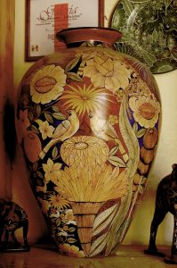
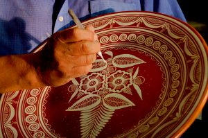
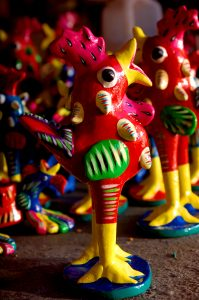

Tipos de artesanías
| Tipo de artesanía | Imagen | Informacion |
|---|---|---|
| BARRO BRUÑIDO |  |
Su nombre se debe a la técnica para obtener el brillo de la pieza que se obtiene tallándola con un metal llamado pirita. También es conocida como técnica madre por tener características prehispánicas en su proceso de elaboración. |
| BARRO BANDERA |  |
Dentro de la gran variedad de formas de trabajar el barro, podemos encontrar una de las más antiguas y tradicionales, nos referimos al BARRO BANDERA. Toma este nombre ya que en cada pieza están plasmados los tres colores que simbolizan nuestra bandera nacional, identidad de todos los mexicanos. |
| BARRO BETUS |  |
Las manos mágicas de sus artesanos reflejan la esencia e imaginación a través de sus bellas obras con la denominación de surrealista y con algunas características zoomorfas que se realizan en la técnica. |